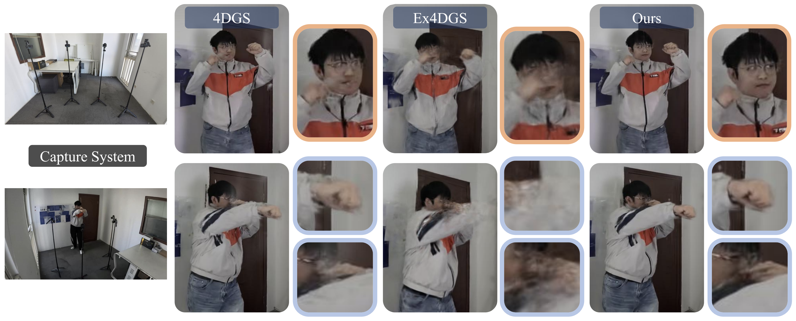
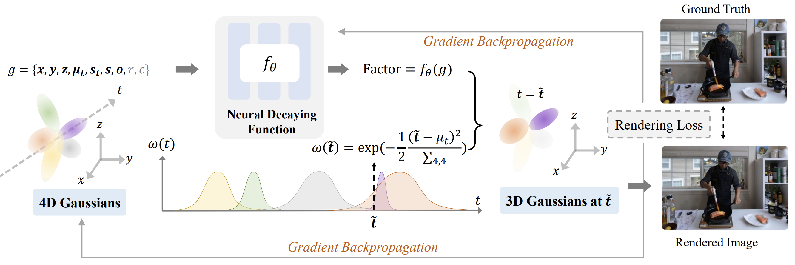

This paper tackles the challenge of recovering 4D dynamic scenes from videos captured by as few as four portable cameras. Learning to model scene dynamics for temporally consistent novel-view rendering is a foundational task in computer graphics, where previous works often require dense multi-view captures using camera arrays of dozens or even hundreds of views. We propose 4C4D, a novel framework that enables high-fidelity 4D Gaussian Splatting from video captures of extremely sparse cameras. Our key insight lies that the geometric learning under sparse settings is substantially more difficult than modeling appearance. Driven by this observation, we introduce a Neural Decaying Function on Gaussian opacities for enhancing the geometric modeling capability of 4D Gaussians. This design mitigates the inherent imbalance between geometry and appearance modeling in 4DGS by encouraging the 4DGS gradients to focus more on geometric learning. Extensive experiments across sparse-view datasets with varying camera overlaps show that 4C4D achieves superior performance over prior art.

Overview of 4C4D. We introduce a Neural Decaying Function $f_\theta$, implemented as a lightweight neural network, to adaptively control the opacity decay of Gaussians. Given key Gaussian attributes as input, $f_\theta$ predicts a factor that controls the decay of Gaussian opacities. During training, both the Neural Decaying Function and the 4D Gaussians are jointly optimized via gradient backpropagation under a photometric rendering loss.
@inproceedings{zhou20264c4d,
title = {4C4D: 4 Camera 4D Gaussian Splatting},
author = {Zhou, Junsheng and Yang, Zhifan and Han, Liang and Zhang, Wenyuan and Shi, Kanle and Xu, Shenkun and Liu, Yu-Shen},
booktitle = {Proceedings of the IEEE/CVF Conference on Computer Vision and Pattern Recognition},
year = {2026}
}